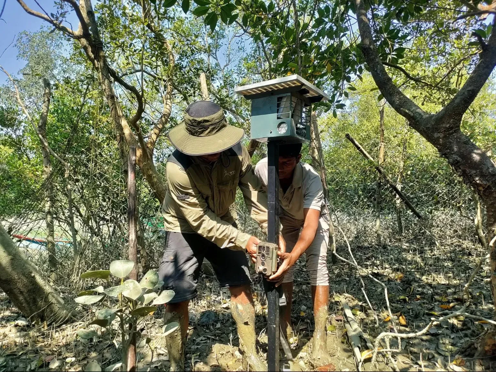
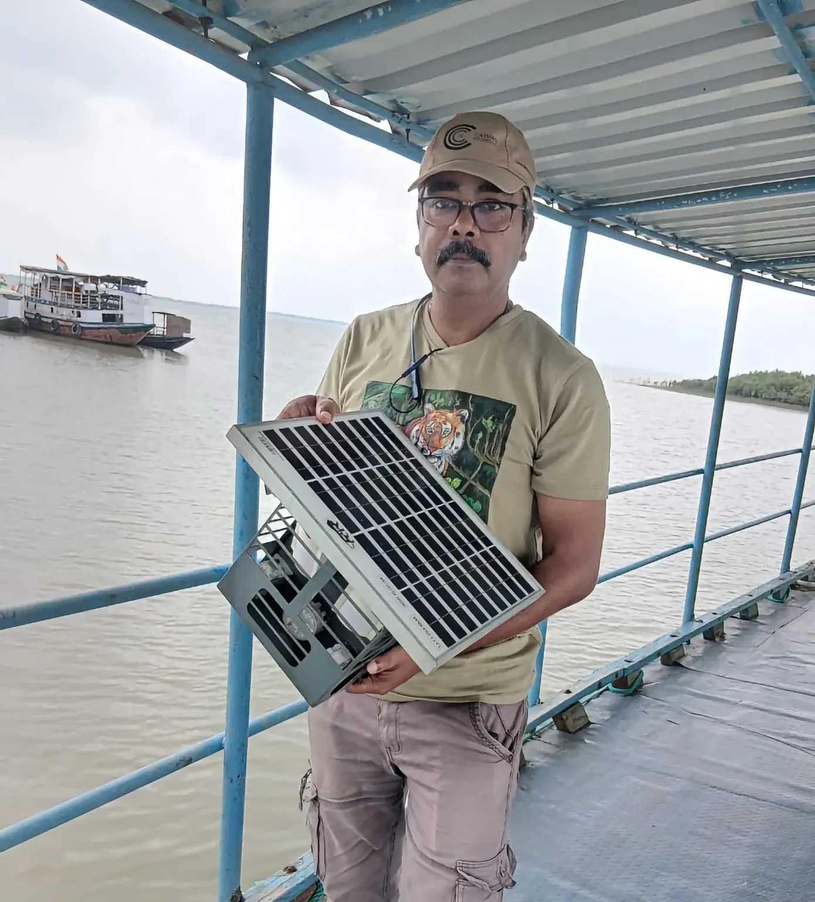

In a significant step toward reducing human–tiger conflict in the Sundarbans, solar-powered monitoring and deterrence devices known as ANIDERS (Animal Intrusion Detection and Repellent System) have been installed in selected vulnerable forest-fringe locations.
The initiative involves the Wildlife Trust of India (WTI) and the South 24 Parganas Forest Division, with the pilot deployment reported in high-risk areas under the Raidighi Range, including locations around Kultali and the Herobhanga forest compartments.

What is ANIDERS?
ANIDERS is a technology-driven, non-lethal system designed to detect wildlife movement near human settlements and provide an additional deterrent at vulnerable entry points.
- Motion-sensing detection technology
- Reported coverage of approximately 25–30 metres within a 180° field
- Solar-powered operation
- Designed to alert or deter wildlife movement before animals reach village areas

Why this matters in the Sundarbans
Many villages in the Kultali region share a close boundary with tiger habitat. Tiger movement towards human settlements can create dangerous encounters, panic and risks of retaliatory harm to wildlife.
Early detection and carefully placed deterrence systems may help reduce sudden encounters, support coordinated response by forest personnel and strengthen coexistence efforts. The pilot is being evaluated, and its reliability and effectiveness will need to be assessed through field experience over time.
Technology alone is not the solution
Devices like ANIDERS can become useful tools, but their long-term value depends on suitable placement, regular maintenance, monitoring and a coordinated response system. Technology should complement community awareness and the work of forest authorities, not replace them.
Conservation in the Sundarbans is about protecting wildlife while also safeguarding the people who live alongside this extraordinary mangrove ecosystem. Initiatives that pursue non-lethal, evidence-led coexistence deserve attention, careful evaluation and continued support.
Sundarbans, West Bengal, India
Follow Sudeep Sundarban Travels for responsible wildlife tourism, field stories and conservation updates.